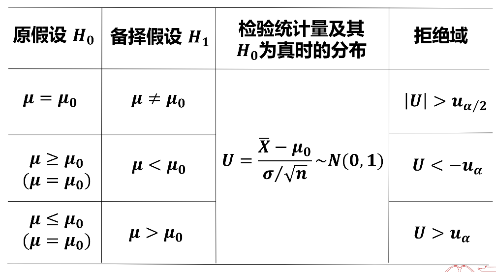
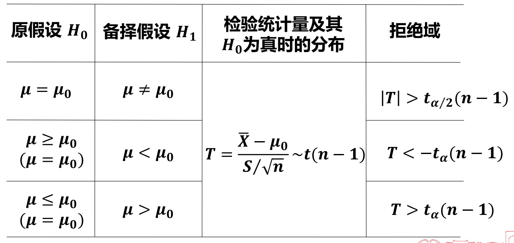
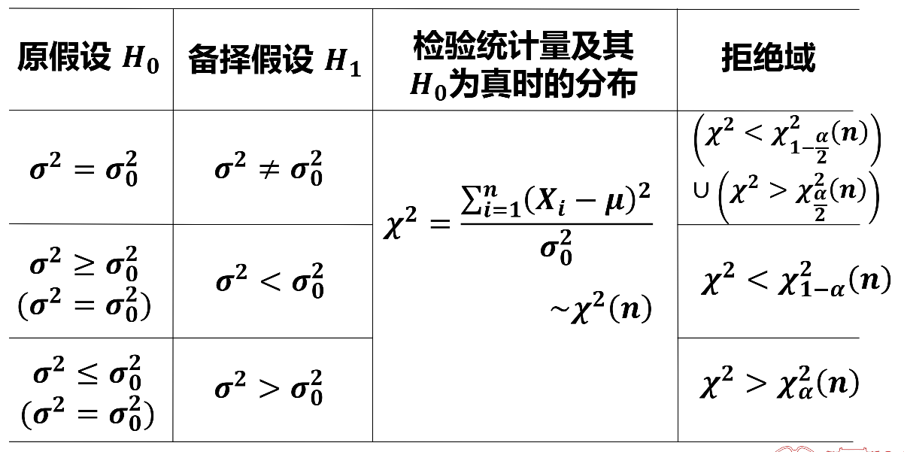
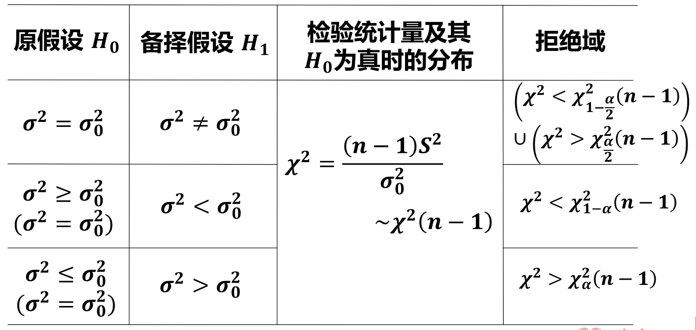
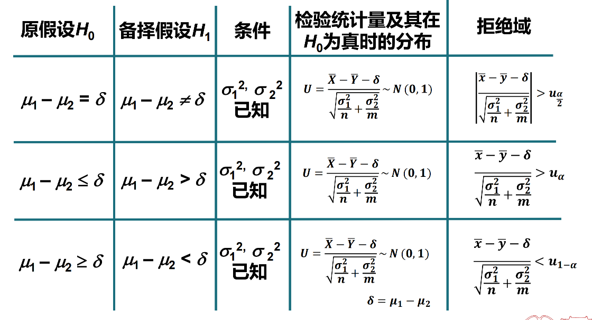
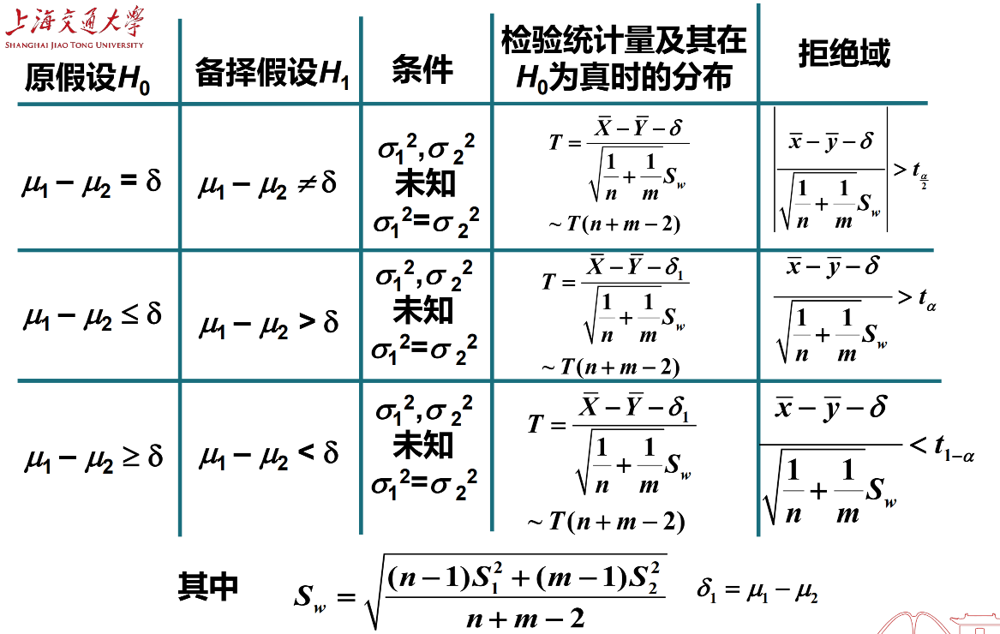
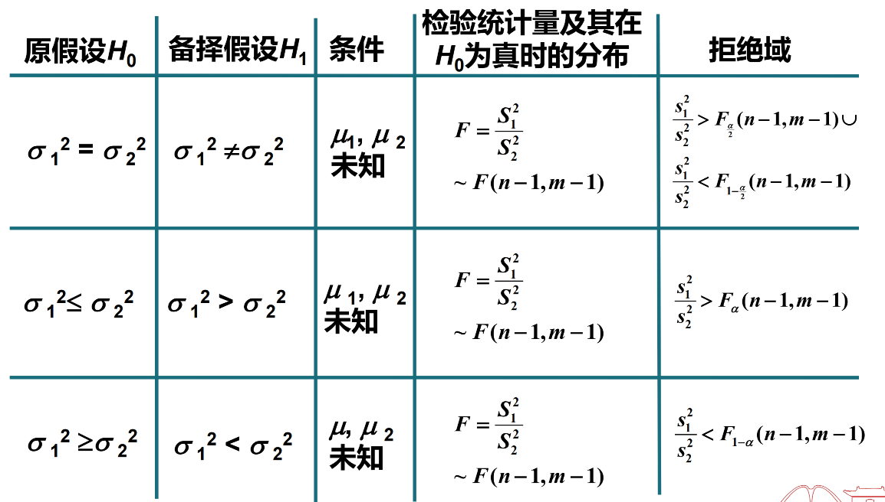

Math Review: Probability Theory
Last updated on April 25, 2026 pm
本期是概率论与数理统计的简单复习。
随机事件和概率
概率的性质
- 差的概率：
- 加法定理：
一般地，
条件概率
-
全概率公式：
若 两两互斥，且 ，那么
-
贝叶斯公式：
随机事件的关系
-
互斥：事件 不能同时发生，即
-
对立：事件 不同时发生，但其中一定有一个发生，即 且
- 与互斥的关系：对立一定互斥，互斥不一定对立
-
独立：
- 与互斥的关系：若 ，则互斥一定不独立，独立一定不互斥
随机变量及其分布
常见的离散型分布
-
两点分布：
-
概率分布：
-
数学期望：
-
方差：
-
-
二项分布：
-
概率分布：
-
数学期望：
-
方差：
-
-
几何分布：
-
背景：一系列伯努利试验中，第一次成功时的试验次数
-
概率分布：
-
数学期望：
-
方差：
-
-
负二项分布（帕斯卡分布）：
-
背景：一系列伯努利试验中，第 次成功时的试验次数
-
概率分布：
-
-
泊松分布：
-
概率分布：
其中
-
数学期望：
-
方差：
-
常见的连续型分布
-
均匀分布：
-
密度函数：
-
分布函数：
-
数学期望：
-
方差：
-
-
指数分布：
-
密度函数：
其中
-
分布函数：
-
数学期望：
-
方差：
-
-
正态分布：
-
密度函数：
其中
-
数学期望：
-
方差：
-
泊松分布和其他分布的关系
-
泊松分布与二项分布：若 ，当 较大， 较小，而 适中时，可以近似看成参数为 的泊松分布
- 泊松定理：设 ，则对固定的
- 泊松定理：设 ，则对固定的
-
泊松分布与指数分布：泊松分布描述“在单位时间内事件发生的次数”，指数分布描述“相邻两次事件发生的时间间隔”
- 例如， 内某柜台需要服务的顾客数 ，那么先后两个顾客到达柜台的时间间隔服从指数分布
-
泊松分布与正态分布：泊松分布的极限大样本分布近似于正态分布
多维随机变量及其分布
-
联合分布与边缘分布：
- 已知联合分布可以求得边缘分布，反之则不能唯一确定
-
条件分布：
- 已知联合分布可以求得条件分布，反之则不能唯一确定
- 但边缘分布和条件分布可以结合求出联合分布
-
随机变量的独立性：
此时边缘分布完全确定联合分布
-
具有可加性的分布：同一类型分布的独立随机变量和的分布仍服从此类分布
-
泊松分布：若 和 相互独立，且 ，，那么
-
二项分布：若 和 相互独立，且 ，，那么
-
正态分布：若 和 相互独立，且 ，，那么
-
卡方分布：若 和 相互独立，且 ，，那么
-
-
具有无记忆性的分布：几何分布、指数分布
随机变量的数字特征
-
方差：
- 定义：
- 计算公式：
- 定义：
-
协方差：
- 定义：
- 计算公式：
- 定义：
-
相关系数：
-
不相关的等价表述：若 和 的方差均存在且大于零，下列命题等价：
- 与 不相关
-
不相关与独立的关系： 与 相互独立，可以推出 与 不相关；反之则不然
大数定律和中心极限定理
-
切比雪夫不等式：设随机变量 的方差 存在，则对于任意实数 ，
-
依概率收敛：设 是一系列随机变量，若 有
则称随机变量序列 依概率收敛于常数
- 含义：随机变量序列 收敛于常数 的概率趋于 1
大数定律
-
大数定律的定义：若随机变量序列 满足：对 有
称该随机变量序列服从大数定律，即
- 也就是说，当样本数量足够大时，样本均值与数学期望充分接近
-
伯努利大数定律：设 是 次独立重复试验中事件 发生的次数， 是每次试验中 发生的概率，则 ，有
即
-
切比雪夫大数定律：设随机变量序列 两两不相关，它们的方差存在，且有共同的上界，即
则该序列服从大数定律，即对任意正数 ，有
-
辛钦大数定律：设 相互独立，服从同一分布，且具有相同的数学期望 ，则对任意正数 ，有
即
中心极限定理
-
独立同分布中心极限定理：设随机变量序列 为相互独立同分布的，它们的期望、方差都存在，
则对于任意实数 ，
这表明 足够大时，
即
-
棣莫弗-拉普拉斯中心极限定理：设 ，则对任一实数 ，有
即 足够大时，
数理统计的基本概念
常用统计量
设 是来自总体 的容量为 的样本，
-
样本均值：
- 均值：
- 方差：
-
样本方差：
- 均值：
-
样本的 阶原点矩：
-
样本的 阶中心矩：
-
上侧 分位数：
-
双侧 分位数： 的概率密度函数为偶函数，
抽样分布
-
正态分布：若 相互独立，且 ，则
特别地，若 ，则
-
分布：设 相互独立，且 ，则
- ，
- 当 时， 正态分布
-
t 分布：设 ， 相互独立，则
- t 分布的概率密度是偶函数
- 当 时， 正态分布
-
F 分布：设 ， 相互独立，则
- 若 , 则
正态总体抽样分布
-
一个正态总体：
-
两个正态总体：
若 ，则
参数估计
点估计
-
矩估计：用样本的 阶矩作为总体的 阶矩的估计量，建立含有待估计参数的方程，从而可解出待估计参数
-
最大似然估计：概率最大的事件在一次实验中最可能发生，因此使得一次试验就出现的事件有较大的概率的参数作为参数真值的估计
- 步骤：
- 写出似然函数
- 求出 ，使得
- 最大似然估计不变性原理：设 是末知参数 的最大似然估计，又 是 的连续函数，则 是 的最大似然估计
- 步骤：
点估计的评价标准
-
无偏性：估计量的期望等于真实值
- 定义：设 是总体参数 的估计量，若 存在且
则称 是 的无偏估计量
- 样本 阶矩 是总体 阶矩 的无偏估计量
- 样本均值 是总体期望 的无偏估计量
- 样本二阶原点矩 是总体二阶原点矩 的无偏估计量
- 不是总体方差 的无偏估计量
- 是总体方差 的无偏估计量
- 定义：设 是总体参数 的估计量，若 存在且
-
有效性：在无偏估计量中，方差更小的估计量更有效
- 定义：设 和 都是总体参数 的无偏估计量，且
则称 比 更有效
- 定义：设 和 都是总体参数 的无偏估计量，且
-
一致性：当样本容量 足够大时，估计量接近真实值
- 定义：设 是总体参数 的估计量，若 依概率收敛于 ，即对 ，有
则称 是总体参数 的一致（或相合）估计量
- 样本 阶矩是总体 阶矩的一致估计量
- 样本方差是总体方差的一致估计量
- 样本二阶中心矩也是总体方差的一致估计量
- 定义：设 是总体参数 的估计量，若 依概率收敛于 ，即对 ，有
区间估计
-
置信度的含义：反复抽取一定容量的样本得到的多个区间中，含有参数真值的区间所占比例
-
评价标准及原则：
- 可靠度： 反映了估计的可靠程度， 越小，可靠程度越高
- 估计精度：置信区间的长度反映了估计的精度
- 原则：一般先保证可靠度，在保证可靠度的基础上，再提高精度
- 提高精度的方法：增大样本容量
-
求置信区间的步骤：
- 构造一个样本的函数（枢轴量）
其含有待估参数，不含其它未知参数，其分布已知，且分布不依赖于待估计参数
- 给定置信度 ，确定两个常数 使得
- 由 解出
得到置信区间
- 构造一个样本的函数（枢轴量）
-
一个正态总体下的置信区间：
- 方差 已知，求 的置信区间
- 方差 未知，求 的置信区间
- 均值 已知，求 的置信区间
- 均值 未知，求 的置信区间
- 方差 已知，求 的置信区间
假设检验
假设检验的概念
-
假设检验的步骤：
- 提出原假设 与备择假设
- 通常把有把握的、有经验的结论作为原假设
- 当 为真时，选择一个合适的检验统计量 ，它的分布已知
- 给定显著性水平 ，确定拒绝域
- 双侧检验：
- 左侧检验：
- 右侧检验：
- 计算检验统计量的样本值，根据样本值作出相应的推断
- 提出原假设 与备择假设
-
假设检验的原理：小概率事件原理
- 小概率事件在一次实验中几乎不发生
-
两类错误：
- 第一类错误：弃真错误，即在 为真的条件下拒绝
- 犯第一类错误的概率为 ，即显著性水平
- 第二类错误：取伪错误，即在 为假的条件下接受
- 犯第二类错误的概率为
- 减小 的方法是增大样本容量
- 第一类错误：弃真错误，即在 为真的条件下拒绝
-
假设检验的原则：控制犯第一类错误的概率不超过 ，然后尽可能减少犯第二类错误的概率
单个正态总体的参数检验
均值 的检验
- 已知： 检验法

- 未知： 检验法

方差 的检验
- 已知： 检验法

- 未知： 检验法

值检验法
-
步骤：
- 根据问题提出假设，如 ，
- 确定检验统计量，如
- 算出检验统计量的观测值（如：记为 ）
- 计算 ，这个 值就等于拒绝原假设的概率
- 对于对称分布：如标准正态分布或 分布
- 对于一般分布：如 分布或 分布
- 对于对称分布：如标准正态分布或 分布
- 判断：如果 值很小，有理由认为发生这个事件的可能性非常小，所以拒绝 ；否则接受
-
值的含义： 值的大小决定了 的不可能性程度
- 如果觉得 值小到不能接受的程度，就拒绝
- 值越小，说明实际观察到的数据与 之间的不一致程度越高，检验的结果也就越显著
两个正态总体的参数检验
-
关于 的假设检验：
- 已知：

- 未知且 ：

-
关于 的假设检验：

参考资料
本文参考了上海交通大学《概率统计》课程 MATH1207H 皮玲老师的 PPT 课件。